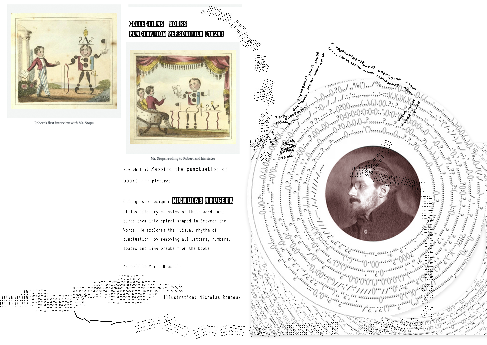
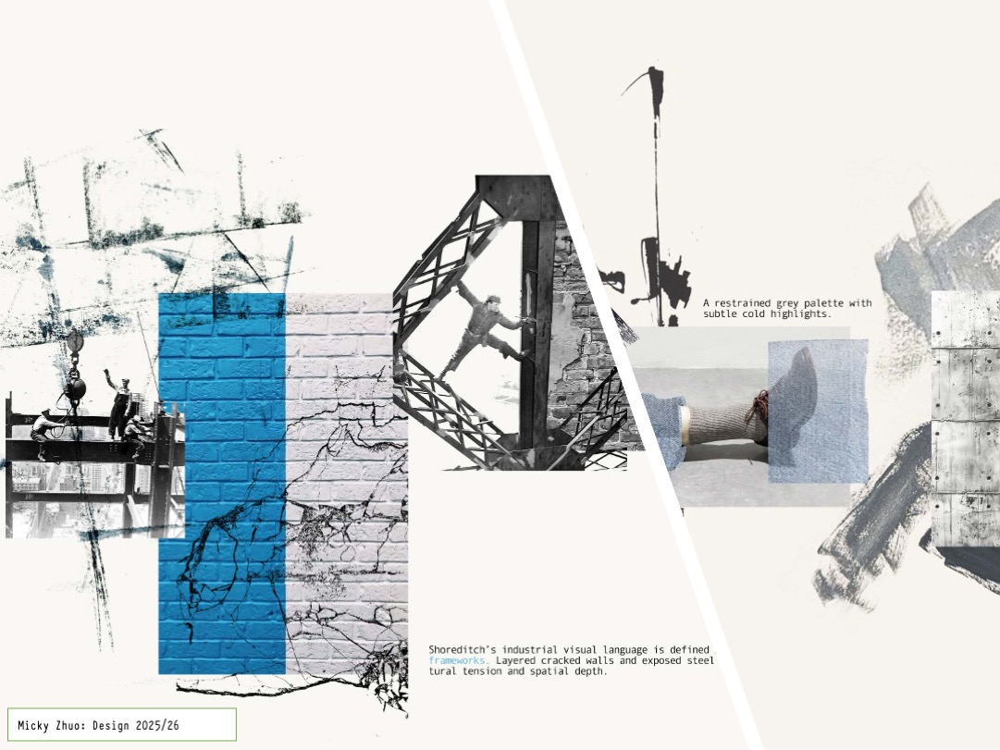
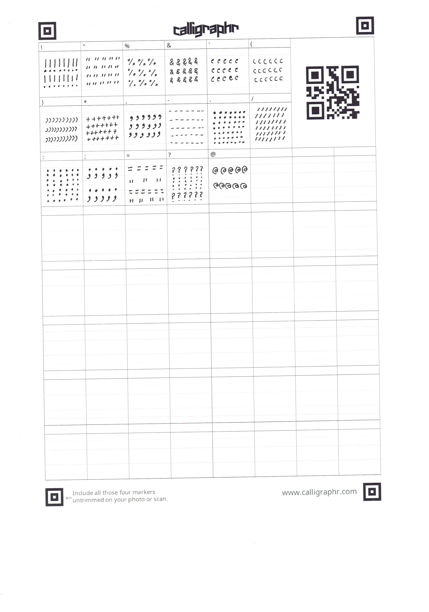
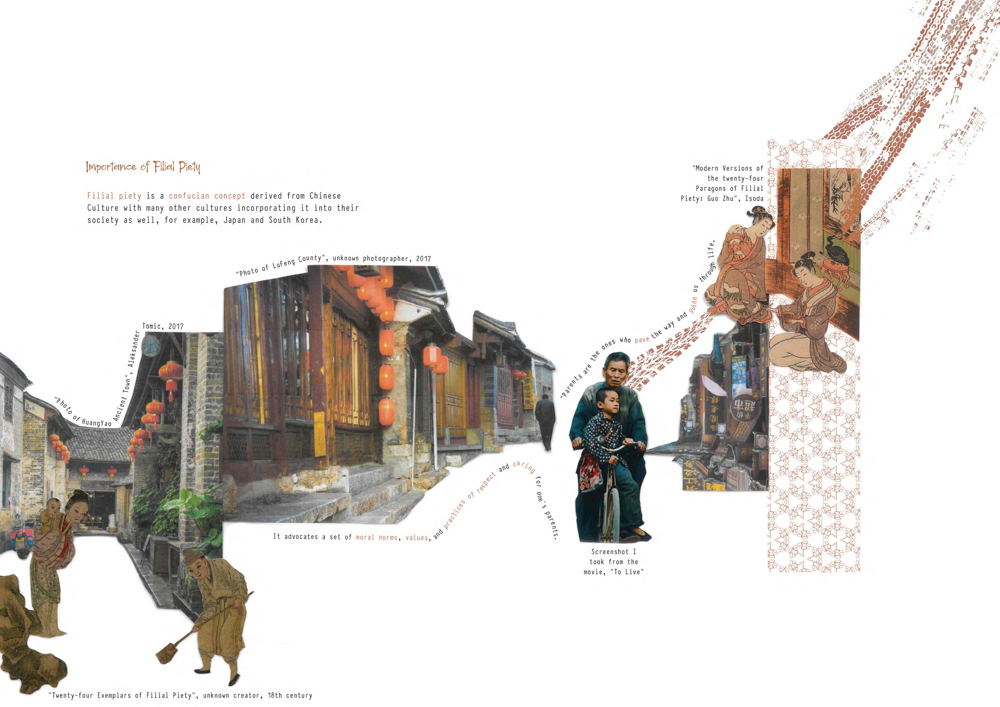

Typing Your
Mark-Making
Turn your own hand-made marks into a font.
Use them to build a research page.
Punctuation as visual language

- Punctuation Personified, 1824 — a children’s book that gave each mark a body and a personality
- Nicholas Rougeux — Between the Words — removed the letters from classic books. Only the punctuation is left, in spirals.
- Your marks — keep the job of the mark (direct, connect, pause). The shape is yours.
Student inspiration

- Marks as texture — scratchy ink sets the mood: broken, industrial
- Diagonal slash — one line connects her photos to her secondary research
- Colour as a signal — one blue thread says "these are connected"

- Drawn rectangles — a box over a photo says "look here"
- Arrows — move the reader from image to image
- Text as a mark — rotated words become part of the drawing
The key idea
Calligraphr turns any black mark into a character you can type.
- Press A → your diagonal slash
- Press B → your ink splatter
- Any size · works in Photoshop, InDesign and other Adobe apps
What jobs can a mark do?
Leads the eye
Splits the page into zones
Highlights part of an image
Adds rhythm
Links primary and secondary research
Points to a key idea
Does this mark feel like my research theme?
Do this before class.
Full steps are on the homework page ↗.
- What connects your artist references?
- Is there a feeling or texture in your images?
- Rough, fragile, geometric — what is your theme like?
Industrial decay
Scratchy, broken, diagonal
Neat arrows that could be anyone’s
One mark for each job: 1–2 arrows · 1–2 dividers · 1 frame · 2–3 textures · 1 emphasis · 1 connector
- Log in to calligraphr.com ↗ (your Week 1 account)
- Click Templates → punctuation / special characters
- Download as PDF. Print on white paper.
- Write a small pencil note on each box: which mark goes here? This is your mark map.
> directs · { } frames · ! emphasises · / divides. The job is given. The shape is yours.
Fill each box boldly. Keep the mark inside the box.

✓ Works well
- Bold brush marks
- Thick pen gestures
- Stamp prints
- Drawn arrows, rectangles
- Splattered ink
⚠ Test first
- Light pencil
- Pale ink
- Very fine crosshatching
- Photo textures
- Scan at 300 DPI or more (or Adobe Scan / Microsoft Lens)
- Save as JPEG
- Straight, no shadows
Turn your scan into a font.
Then type your marks in Photoshop.
- Log in to calligraphr.com ↗
- Go to My Fonts → Upload Template
- Choose your JPEG
Calligraphr now cleans up your marks automatically. In most cases you do not need to edit them.
Just check:
- Each mark is found in the right box
- No mark is cut off at the edges
- The set looks consistent
The rough parts of your marks stay. This makes them look hand-made.
- Name: your name + theme, e.g. Sam_Industrial_Marks
- Click Build Font
- Check the preview
- Download the .ttf or .otf file
- Mac: double-click → Install Font
- Windows: right-click → Install
Close Photoshop. Open it again. Now you can see your font.
- Choose the Type Tool (T)
- Find your font by name
- Type the punctuation keys from your mark map
- Try them small (12pt) and big (200pt)
- Export: File › Export › Export As… → JPG → marks.jpg
Use your marks on a research page.
Every mark should do a job.
Your page needs
Your own photos, sketches or notes
Other artists’ and designers’ work
A short paragraph in your own words
Who made it, when, where you found it
To connect, frame and guide
Layout ideas
Energy. Guides the eye across the page.
Arrows link your photos to artist references.
A box says "this part matters".
Rotate it. Put it at an angle.
Use it for one job only.
Empty space makes marks look deliberate.
Type on a path · click to open
- Choose the Pen Tool (P) or Ellipse Tool (U)
- In the top bar, set the mode to Path — not Shape
- Draw a curve, a circle, or trace round a figure
- Choose the Type Tool (T)
- Move over the path — the cursor changes to a wavy line
- Click on the path. Type.
- Choose the Path Selection Tool (A)
- Drag the text along the path
- Drag across the line to flip it inside the curve
View › Show › Target Path — or click somewhere else. The line does not export.
Student example

References and knowledge text
- Artist + title + year, small, next to the image
- Website: artist + website name
- Book or archive: author or institution + publication
- Use your accent colour — like Micky
❌ Just a label
"This is a photo of a cracked wall."
✓ Knowledge text
"The cracked surface connects to my research into urban decay — how buildings record time and use."
Explain: What do you see? Why does it matter? Which artist or idea does it connect to?
- Keep layers: File › Save As… → PSD
- Export: File › Export › Export As… → JPG → layout.jpg
Show how you learned today.
Use the Progress Tool. It makes a PDF.
Your teacher sees how you worked, not only the final page.
Your reflection is part of your assessment.
It opens in a new tab. Keep this page open too.
- Type your name
- Upload your JPEG files:
- Your scanned mark template
- marks.jpg — your marks typed (Task 1)
- layout.jpg — your page (Task 2)
- Add a short caption to each one
In Photoshop: File › Export › Export As… → Format: JPG → Export
- I used … to …
- This worked because …
- This was difficult because …
- Next time I will …
Also think about: How do your marks show your theme? Which mark does the most important job?
- Click Download Progress Report
- Save the PDF on your computer
- Upload it in the Submit tab
Upload 3 things to Padlet.
marks.jpg
layout.jpg
Your PDF
What you built today
Your marks as a font
Marks connect and guide
Primary + secondary together
Part of the design
How you learned